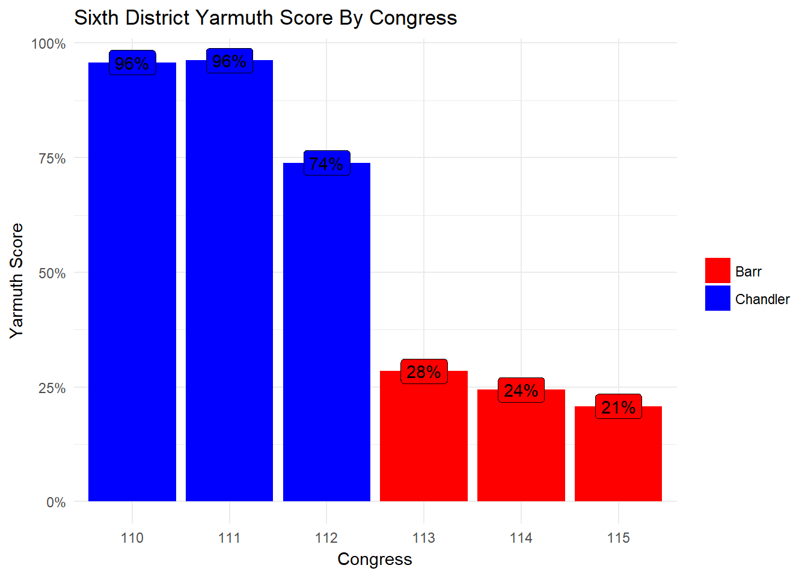
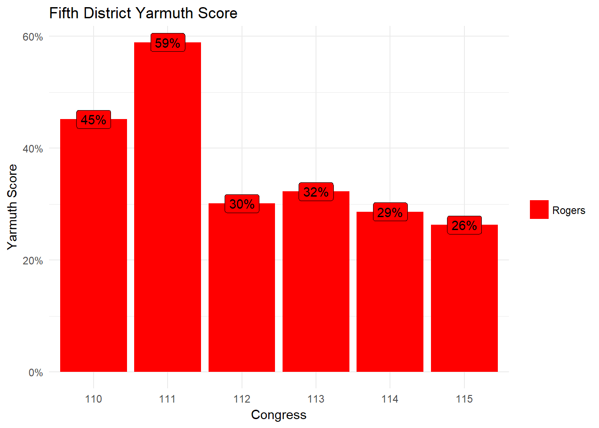
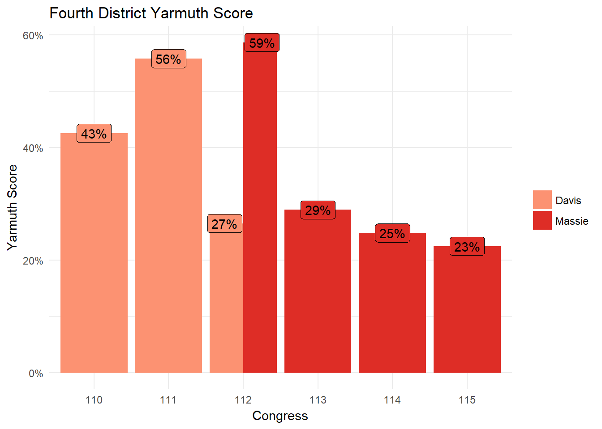
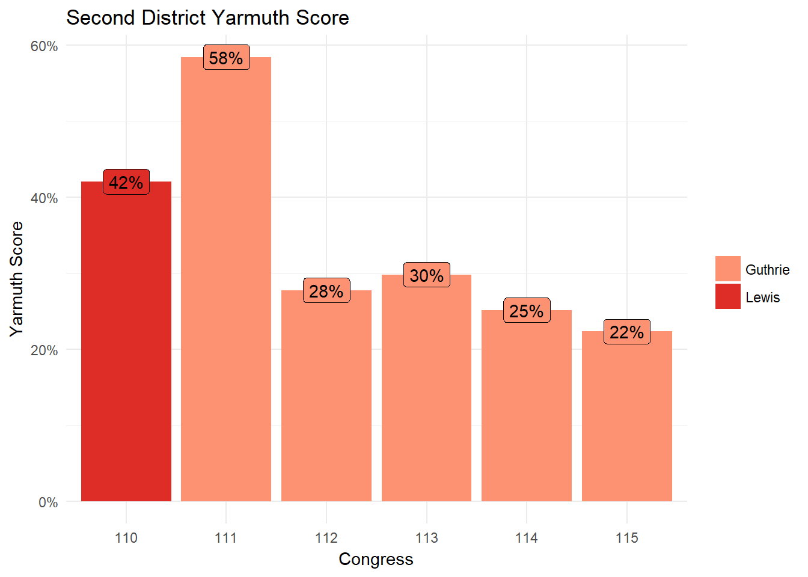
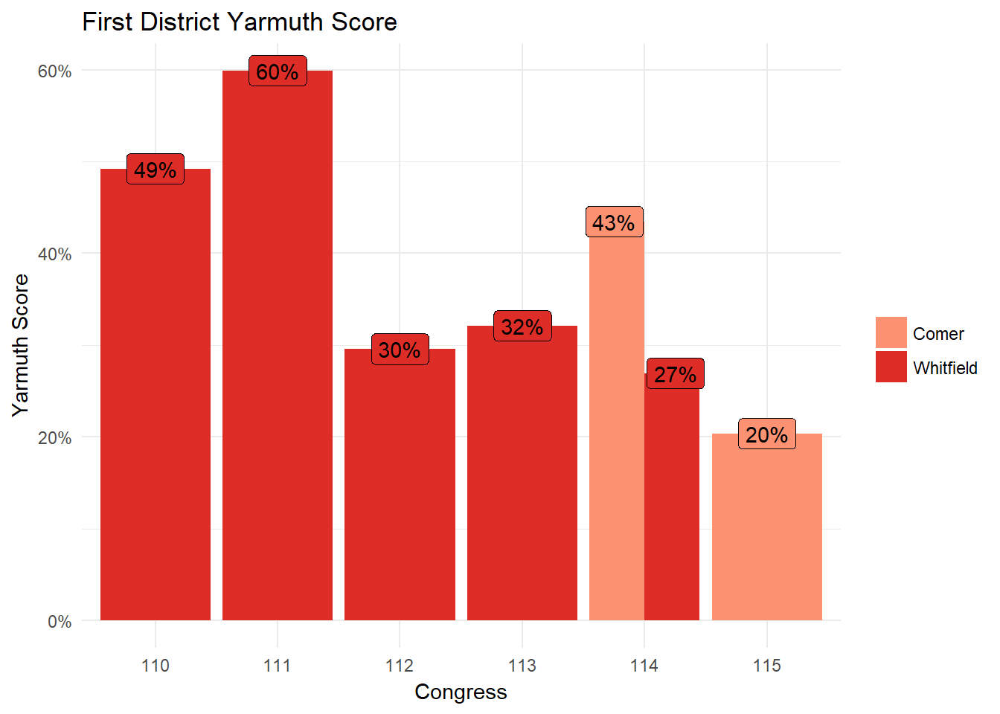

This is John Yarmuth, Kentucky’s third district Congressman. Since 2012, he’s been the only Democrat in Kentucky’s congressional delegation. Without a doubt, Congressman Yarmuth is the most liberal Kentucky US House Member to have served this century.
While the rest of Kentucky’s delegation has been more conservative than Congressman Yarmuth, I don’t think anyone has ever done any real work to measure the magnitude by which Congressman Yarmuth is the most liberal. So, I did it! To accomplish this task, I used the Pro Publica Congress API. This is a great tool, and even provides the ability to automatically compare two congresspeople. All the data for these comparisons comes directly from that API.
When I started this project, I thought it would be about people – and it is. But, this project ended up also being about the nature of government in the US. Kentucky Republican House members have changed over time, but the story in each district is very similar: since the GOP took over the House of Representatives in the 112th Congress, the House has been bitterly divided in a way it wasn’t before that. When it comes to voting records, even Representatives who are anecdotally understood to be more “moderate” actually cast their votes in a very partisan way. There have been many stories about this phenomenon from a national perspective, and I’m happy to tell the story from Kentucky.
District 6


From 2007 until 2013, the sixth district was represented by Ben Chandler – the only Democrat from Kentucky with whom Congressman Yarmuth has served. Since 2013, the district has been represented by Andy Barr. Chandler was considered to be significantly more conservative than John Yarmuth, but he ended up voting with Congressman Yarmuth nearly 90% of the time in total. Congressman Barr has voted with Congressman Yarmuth significantly fewer times than Congressman Chandler. The sixth district is Central Kentucky.
Ben Chandler’s
Yarmuth Score: 89%
Andy Barr’s
Yarmuth Score: 25%
The chart below shows the trend over time for the sixth district congressperson’s record of voting with Congressman Yarmuth. During Congressman Chandler’s last term, he voted less and less with Congressman Yarmuth. During the 112th congress (2010-2012), Congressman Chandler faced a serious challenge from Andy Barr, which he ended up losing. The 2012 election was the first with the current map – the sixth district added some Eastern Kentucky counties, and lost some counties in the Bluegrass region of Kentucky. Congressman Chandler might have moderated his positions to attempt to remain competitive in his district. Additionally, the House changed hands in 2010 from Democrats hands to John Boehner’s GOP. This meant that more divisive legislation meant to put Democrats in awkward positions came to the floor. As a more vulnerable Democrat, Congressman Chandler might have felt the need to vote against Congressman Yarmuth in some token votes.
The sixth district is a good case study in the difference between a “Blue Dog Democrat” and a Republican. While it’s true that Congressman Chandler voted less with Congressman Yarmuth as time went along, Congressman Barr almost never votes with Congressman Yarmuth – Congressman Barr voted against Congressman Yarmuth 62% more in his first term than Congressman Chandler did in his final term.

District 5

Hal Rogers is the only Congressperson from Kentucky who has served longer than Congressman Yarmuth. He represents the fifth district, which is in the Eastern part of the state.
Hal Rogers’
Yarmuth Score: 39%
Rogers’ Yarmuth Score is the highest among Kentucky Congresspeople currently serving. Rogers has also voted on more of the same bills as Congressman Yarmuth than any other Congressperson from Kentucky since Congressman Yarmuth began serving – Rogers has voted on 12% more bills than Congressman Whitfield, who has the second most “common votes.”
It’s clear from the chart below that Rogers has voted with Yarmuth significantly fewer times since the 112th congress (after 2012). This is a good indicator of how our nation’s Congress has become more polarized – since the House moved to GOP control in 2012, Congressman Rogers voted less and less with Congressman Yarmuth. However, even when restricting to votes taken since the 112th congress, Rogers is still the current Kentucky Congressman most likely to vote with Congressman Yarmuth.

District 4


For the first three terms of Congressman Yarmuth’s tenure, Geoff Davis was the 4th district Congressperson. At the end of Congressman Davis’s 4th term, he resigned, and Thomas Massie won both the special election to fill Congressman Davis’ seat for the remainder of the 112th Congress, and the general election to the 113th Congress. Congressman Massie has won reelection twice. While Congressman Massie is not a part of the very conservative group of Congresspeople called the House Freedom Caucus, he often aligns with and defends that group. The fourth district covers most of Kentucky along the Ohio River from far eastern Jefferson County to western Boyd County. Fun fact: my maternal grandparents and paternal grandfather live about a 3 hour drive from one another, yet all vote in the 4th district.
Geoff Davis’
Yarmuth Score: 42%
Thomas Massie’s
Yarmuth Score: 27%
The story of the fourth district is much the same as the fifth district, with a significant shift in Yarmuth Score between the 111th and 112th Congress. (I almost didn’t include Congressman Massie’s score for the 112th congress, as only 46 votes were in common, and they were all at the end of the Congress, which includes a significant number of wrap-up votes). While it’s easy to say that Congressman Massie is much more conservative than Congressman Davis, it’s worth noting that during Congressman Davis’ final term, his Yarmuth Score was only 27% – very close to Congressman Massie’s numbers during his three terms. While Congressman Davis has the highest overall Yarmuth Score for a Republican, his final term was a stark departure from that. It’s worth wondering if the change in partisan control of the House has more to do with these scores than the Representatives themselves.
Congressman Massie is also a good example of how the Yarmuth Score is an imperfect measure. Votes are binary, by nature. For example, the reasons both Congressman Yarmuth and Congressman Massie voted against the recent GOP replacement for the Affordable Care Act were very different – but the score just sees that they both opposed the bill, and record that as a similarity.

District 2


Ron Lewis served as the second district Congressperson in Kentucky between 1994 and 2008, and announced his retirement on the filing deadline. Many people thought this action was an attempt to steer the seat to his chief of staff, but Brett Guthrie also managed to file his paperwork before the deadline, and managed to run such a good primary campaign that his opponent dropped out of the race. Congressman Guthrie has served ever since, and has only faced marginal opposition. The second district covers most of the western Pennyrile, “South Central” Kentucky, and some of Central Kentucky (Owensboro, Elizabethtown, Bowling Green, Glasgow, and Danville are all in the second district).
Ron Lewis’
Yarmuth Score: 42%
Brett Guthrie’s
Yarmuth Score: 35%
The story of the second district stays consistent with the rest of the data so far: increased polarization since the 112th congress. Congressman Lewis’ aggregated score is the second highest among Republicans. However, Congressman Guthrie’s first term Yarmuth Score was 58% – on par with Hal Rogers or Geoff Davis during that time. However, since 2012, Congressman Guthrie’s score has dropped, leaving him with one of the lowest overall Yarmuth Scores.

District 1


Ed Whitfield was swept into office as a part of Newt Gingrich’s “Contract with America” in 1995. He served in this seat until the end of his 11th term, when he resigned. James Comer, who had served as Kentucky’s Agriculture Commissioner and had been very narrowly defeated in the Republican Gubernatorial Primary by Matt Bevin, ran for the first district seat and won. The first district is an odd-shaped district that covers all of the Jackson Purchase and the eastern Pennyrile, and then covers the southern most counties in “South Central” Kentucky, then stretches north into the historically Catholic counties in Central Kentucky (Murray, Paducah, Henderson, Scottsville, Campbellsville, and Lebanon are all in the first district)
Ed Whitfield’s
Yarmuth Score: 41%
James Comer’s
Yarmuth Score: 22%
At this point, it’s clear that these scores are more about the increasing partisanship in our Congress than they are about any individual person. By all accounts, James Comer is a relatively moderate person. When he was elected to Agriculture Commissioner in 2011, he worked very closely with Democratic Auditor Adam Edelen, and has worked again with Mr. Edelen in his “New Kentucky Project” with Matt Jones, which is mostly a Democratic affair. Despite this, Representative Comer has the very lowest Yarmuth Score of any Kentucky Congressperson.
It could be, though, that Representative Comer is more conservative than expected. Even when restricting to the 115th Congress, Rep. Comer has the lowest Yarmuth Score, 20% – which is 23% lower than Rep. Rogers’ score during the 115th Congress. It’s likely a combination of these two elements: Rep. Comer is both more conservative than expected, and a victim of increased partisanship in the US House of Representatives.

Conclusion
I started working on this project hoping to tell a story about which of Kentucky’s Congresspeople were more and less conservative, but this story is more about increased partisanship. The US House has changed significantly during Congressman Yarmuth’s tenure – while in some Congresses, Kentucky Republican Representatives voted with him more than half the time, nowadays, they vote with him less than a third of the time. While it’s hard to say if Kentuckians have elected more conservative Representatives, or the larger dynamics of partisanship in our federal Congress are to blame, the conclusion is that Republicans and Democrats – even in Kentucky – are more divided than ever.